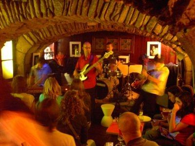
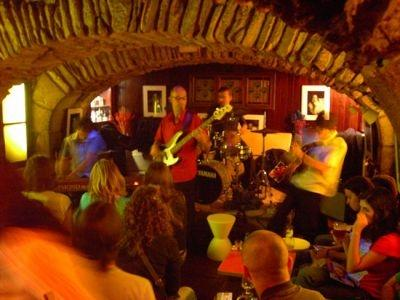

Puede escoger entre dos alternativas. O bien opta por la zona vieja, o bien, por alguna de las múltiples discotecas situadas en la zona nueva de la ciudad.
Dentro de la zona vieja existen múltiples pubs. Destacan: Rincón do Porrón, donde podrá disfrutar de los tradicionales porrones de vino; Pub Momo, que cuenta con una enorme terraza, así como con futbolines, billares y dardos; Pub Modus Vivendi, donde podrá disfrutar de la mejor música en directo; Tarasca, pub pequeño con un ambiente muy acogedor donde se reúnen muchos estudiantes compostelanos etc. También es conocido el Paris-Dakar, que consiste en una ruta de vino y cerveza que pasa por distintos pubs de zona vieja.
 

El ocio nocturno en la zona nueva de la ciudad consiste en una serie de grandes discotecas y bares, donde suena la música más actual y donde se reunen muchos de los jóvenes de compostela. Destacan las discotecas Ruta y Facultad, quizás las discotecas más grandes y con más ambiente; la sala de conciertos Malatesta; y los bares Central Perk y Tropical, buenos lugares para empezar una fiesta, que sin duda terminará en una de nuestras discotecas.